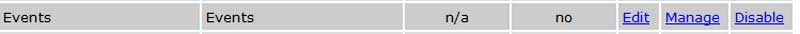

Working with Events: {{eventpanel.msg}}

The Calendar of Events is a feature that allows you to display upcoming events to your site visitors. Like all features, it can be linked to a menu item (button) or to a page area using the link button in the page area editor.
Feature Admin: Selecting a feature administrator from the drop list of your available feature administrators allows you to share the calendar maintenance duties with someone else. Use the drop-down menu to display a the list of feature administrators (Their User records are marked as Feature Administrators).
Categories: Categories allow you to organize your events- users of the site can then filter their calendar view by these categories when browsing the site. You can use the text box to enter categories you'd like to use- one category per line.
Allow User Submissions: If you would like your site visitors to be able to submit their own entries for the calendar, select “yes.” Otherwise, select “no.”
Automatically Accept User Submissions: Assuming you allow submissions (above), you can control whether those submissions are automatically added to the calendar (“yes”) or require review and approval before appearing on the calendar (“no”).
Require User Authentication: If you want only logged in users to be able to view the calendar, select “yes.” Otherwise, select “no.”
Keep Past Events For: You can choose how long the system will store a record of past events. Choose from the drop down list (the default will be “1 Year”- past events will not be deleted from the system).
Setting Up the Calendar
Select “Features” from the Admin panel, and “edit” next to the Events feature. You will see a screen similar to the one shown below.
Site Title: If you prefer to name the calendar something other than the default “Events” you can change the name here. This is the title that will be displayed when the Calendar of Events is displayed on the site.Feature Admin: Selecting a feature administrator from the drop list of your available feature administrators allows you to share the calendar maintenance duties with someone else. Use the drop-down menu to display a the list of feature administrators (Their User records are marked as Feature Administrators).
Categories: Categories allow you to organize your events- users of the site can then filter their calendar view by these categories when browsing the site. You can use the text box to enter categories you'd like to use- one category per line.
Allow User Submissions: If you would like your site visitors to be able to submit their own entries for the calendar, select “yes.” Otherwise, select “no.”
Automatically Accept User Submissions: Assuming you allow submissions (above), you can control whether those submissions are automatically added to the calendar (“yes”) or require review and approval before appearing on the calendar (“no”).
Require User Authentication: If you want only logged in users to be able to view the calendar, select “yes.” Otherwise, select “no.”
Keep Past Events For: You can choose how long the system will store a record of past events. Choose from the drop down list (the default will be “1 Year”- past events will not be deleted from the system).
This section (also on the calendar's 'edit' screen) works much like the main '”Look n Feel” tab on your admin panel, but this is specifically to control the colors of the calendar feature. You can select basic colors from the drop down list, or use specific color codes if you desire (contact your regional support manager for help if you need to find a specific color).
Be sure to click the 'save' button at the bottom of the screen to save your changes and you can move on to adding specific events to the calendar!
Be sure to click the 'save' button at the bottom of the screen to save your changes and you can move on to adding specific events to the calendar!
Once the calendar has been set up, adding events is the next step. Select “manage” next to the “Events” feature and you will see a screen similar to the one shown below.
 To add a new event to the calendar, select the “Create New Event” link. If you allow user submissions and have selected the “Automatically Include…” option, those events will appear in the Current Events section of this screen. Click the 'edit' link for any event to edit the event's information, or click the 'delete' link to remove it. You can also use the selection checkbox (to the left of the exisitng events) to delete multiple events at once.
To add a new event to the calendar, select the “Create New Event” link. If you allow user submissions and have selected the “Automatically Include…” option, those events will appear in the Current Events section of this screen. Click the 'edit' link for any event to edit the event's information, or click the 'delete' link to remove it. You can also use the selection checkbox (to the left of the exisitng events) to delete multiple events at once.
If you allow user submissions but have not selected the “Automatically Accept…” option, those events will appear in the “User Submitted Events Awaiting Approval” section (just below the Current Events).
The bottom section of this screen shows past events. You have the option to se the automatic deletion timeframe on the 'edit' screen as discussed above. Past events may also be deleted manually. This is the “Create New Event” form.
Note: If you have enabled the “Allow User Submissions” option, this is the form a user will see when submitting an event as well (with some slight changes) Event Date: Enter the date of the event. You can either manually enter the date in the format yyyy-mm-dd or click the small calendar icon to select from a pop up calendar.
Event Time: Select the starting time for the event by clicking on the hours and minutes dropdown menus. If you wish to display an event without a time, select “00” in the hours dropdown. Finally, select AM or PM for the start time.
Recurring Event: Select 'yes' to create a recurring event. Click the Recurring Events tag at left for details.
Event Organizer: You can choose from a drop down list of users, or enter contact info for the event organizer manually in the text fields. Note that each event will need a name and phone number and/or email address associated with it.
Event Reminder: Select 'yes' to enable an event reminder email. See below for details on this feature. Note that recurring events cannot have an event reminder (only single date events can use this feature).
Category: Choose from this drop down list if you want to assign this event to a category (see Setup tag for details on adding new category options). Title: Give your event a title. Click the small triangle just above to display the formatting toolbar.
Title: Give your event a title. Click the small triangle just above to display the formatting toolbar.
Description: Enter the event's description. Your display will have the formatting toolbar available- you can add text effects, links, pictures, etc. Approved: This option will be set to 'yes' for all admin-entered events. If a user has submitted an event, and your calendar feature isn't set to automatically accept events, you will have the option to approve the event or not.
Additional Info Link – Normally not needed. It provides a way to link the ad to another page on your site or to an external URL, causing an “additional info” link to appear at the bottom of the event. You can also add links to the description field using the formatting toolbar (just as you would in any page area). Inserting links can be useful for board meeting event listings (you can link to a PDF agenda file, etc).
To add a new event to the calendar, select the “Create New Event” link. If you allow user submissions and have selected the “Automatically Include…” option, those events will appear in the Current Events section of this screen. Click the 'edit' link for any event to edit the event's information, or click the 'delete' link to remove it. You can also use the selection checkbox (to the left of the exisitng events) to delete multiple events at once.If you allow user submissions but have not selected the “Automatically Accept…” option, those events will appear in the “User Submitted Events Awaiting Approval” section (just below the Current Events).
The bottom section of this screen shows past events. You have the option to se the automatic deletion timeframe on the 'edit' screen as discussed above. Past events may also be deleted manually. This is the “Create New Event” form.
Note: If you have enabled the “Allow User Submissions” option, this is the form a user will see when submitting an event as well (with some slight changes) Event Date: Enter the date of the event. You can either manually enter the date in the format yyyy-mm-dd or click the small calendar icon to select from a pop up calendar.
Event Time: Select the starting time for the event by clicking on the hours and minutes dropdown menus. If you wish to display an event without a time, select “00” in the hours dropdown. Finally, select AM or PM for the start time.
Recurring Event: Select 'yes' to create a recurring event. Click the Recurring Events tag at left for details.
Event Organizer: You can choose from a drop down list of users, or enter contact info for the event organizer manually in the text fields. Note that each event will need a name and phone number and/or email address associated with it.
Event Reminder: Select 'yes' to enable an event reminder email. See below for details on this feature. Note that recurring events cannot have an event reminder (only single date events can use this feature).
Category: Choose from this drop down list if you want to assign this event to a category (see Setup tag for details on adding new category options).
Title: Give your event a title. Click the small triangle just above to display the formatting toolbar.Description: Enter the event's description. Your display will have the formatting toolbar available- you can add text effects, links, pictures, etc. Approved: This option will be set to 'yes' for all admin-entered events. If a user has submitted an event, and your calendar feature isn't set to automatically accept events, you will have the option to approve the event or not.
Additional Info Link – Normally not needed. It provides a way to link the ad to another page on your site or to an external URL, causing an “additional info” link to appear at the bottom of the event. You can also add links to the description field using the formatting toolbar (just as you would in any page area). Inserting links can be useful for board meeting event listings (you can link to a PDF agenda file, etc).
 Select the 'yes' radio option for the Recurring event field and a few new options will appear:
Recurs On: Gives you a few options for how often you'd like the event to recur. You can choose a period from the drop down list (Daily, Weekly, Monthly, Yearly), or you can choose certain days of the week.
Select the 'yes' radio option for the Recurring event field and a few new options will appear:
Recurs On: Gives you a few options for how often you'd like the event to recur. You can choose a period from the drop down list (Daily, Weekly, Monthly, Yearly), or you can choose certain days of the week.Ends On: You can have your recurring event end on a specific date. Either enter the date in YYYY-MM-DD format, or click the calendar icon to choose a date.
Select the 'yes' radio option for the Event Reminder field and a few new options will appear (note that event reminders will not work with recurring events):
 Send To: Choose the mailing list you want to use from this drop down list. You'll be able to select from any mailing list where you are set up as an administrator (to add new mailing lists, on your admin panel, click the 'features' tab, then click the 'manage' link for the Mailing List feature).
Send To: Choose the mailing list you want to use from this drop down list. You'll be able to select from any mailing list where you are set up as an administrator (to add new mailing lists, on your admin panel, click the 'features' tab, then click the 'manage' link for the Mailing List feature).
Send On: Choose when to send the message. You can send it on the event date, or on a set number of days before the event is scheduled to occur. The message will automatically be sent in the early morning of the date you choose.
-Something to note: When you set up an event reminder, the message text and title will be saved on this screen. If you'd like your reminder to be sent more than once, just edit this event and change the 'send on' number of days before. When you save the event after changing that number, you can effecitvely resend the same reminder.
Reminder Subject: Enter the title of the email that will be sent.
Reminder Email: Type the message you'd like to send. Using the formatting toolbar, so you can send images, links, and format the text however you'd like.
Remember to click the 'save' button at the very bottom of the event edit screen and your email will be saved and sent on the day you chose. If you need to edit the email, just choose to edit this event and you will have that option.
Send To: Choose the mailing list you want to use from this drop down list. You'll be able to select from any mailing list where you are set up as an administrator (to add new mailing lists, on your admin panel, click the 'features' tab, then click the 'manage' link for the Mailing List feature).Send On: Choose when to send the message. You can send it on the event date, or on a set number of days before the event is scheduled to occur. The message will automatically be sent in the early morning of the date you choose.
-Something to note: When you set up an event reminder, the message text and title will be saved on this screen. If you'd like your reminder to be sent more than once, just edit this event and change the 'send on' number of days before. When you save the event after changing that number, you can effecitvely resend the same reminder.
Reminder Subject: Enter the title of the email that will be sent.
Reminder Email: Type the message you'd like to send. Using the formatting toolbar, so you can send images, links, and format the text however you'd like.
Remember to click the 'save' button at the very bottom of the event edit screen and your email will be saved and sent on the day you chose. If you need to edit the email, just choose to edit this event and you will have that option.
Site users will be able to choose their desired view (day/week/month). Clicking on an existing event will open a pop up window with the description of that event.
If they click on a blank day in the calendar display, a user can submit an event for the calendar (if you've chosen to allow user submitted events). Alternately, they can click the 'submit' button in the left hand menu.